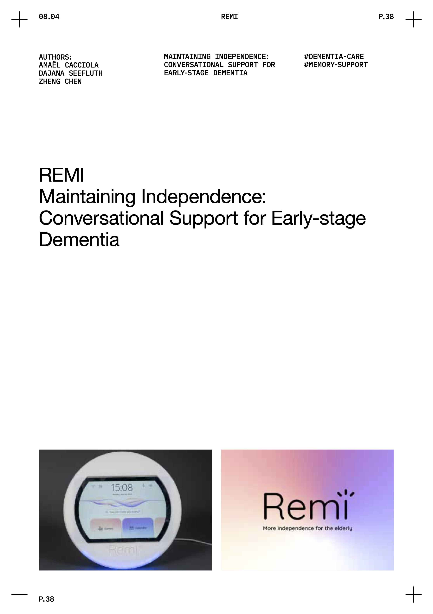
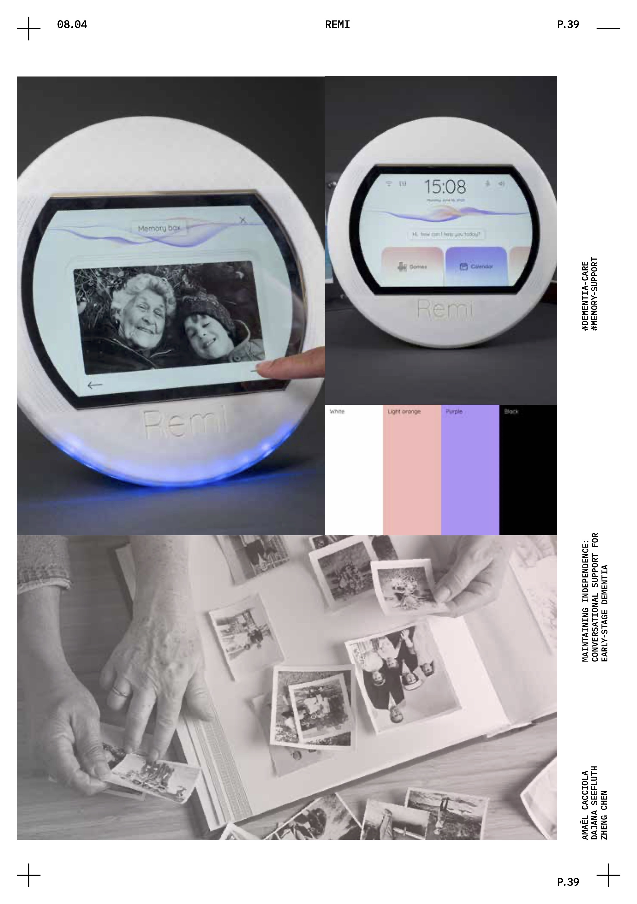
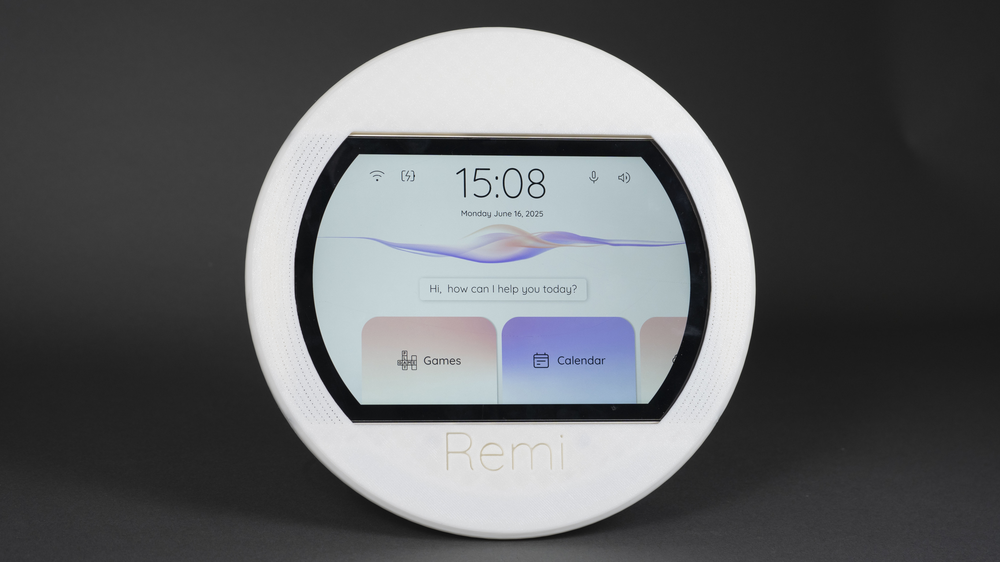
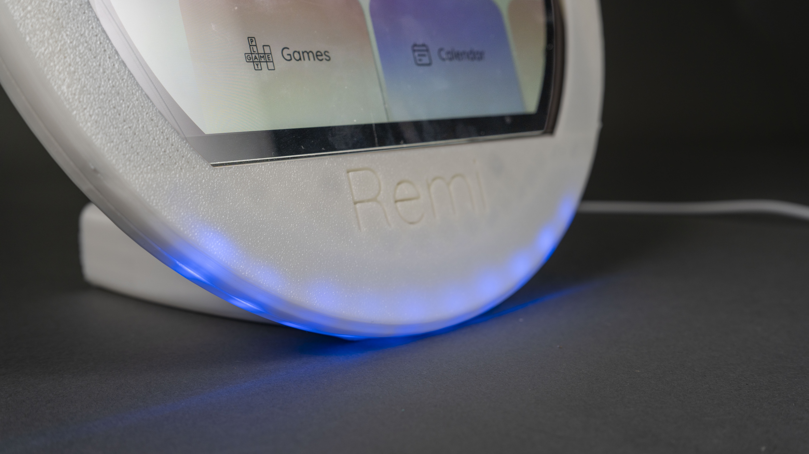
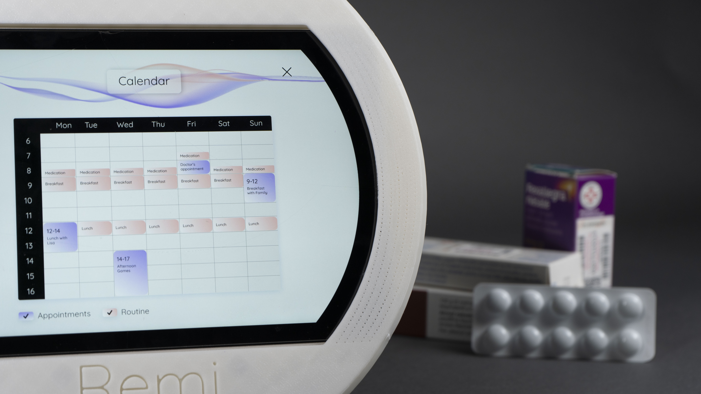

REMI Maintaining Independence: Conversational Support for Early-stage Dementia
How might we empower individuals with early-stage dementia to maintain their sense of identity and purpose by providing a personalized, interactive physical companion that leverages their past experiences and strengths to foster continued engagement in meaningful activities, as well as reduce the burden on the caregiver?
| Author(s) | AMAËL CACCIOLA, DAJANA SEEFLUTH, ZHENG CHEN |
|---|---|
| Course | Multimodal Experience Design in Products |
DESCRIPTION









As an elderly person, it can be very scary when you notice that your memory is getting worse. Maybe it starts with forgetting some names or frequently forgetting where you placed your keys. It can be even more frustrating when you forget whether you have eaten already or when you get lost and cannot recognize where you are or even how you got there. Many patients with dementia try to hide their memory loss in front of peers and even family, as they do not want to admit they are struggling and do not want to lose their independence. As a result, it also becomes harder for family members to notice, talk about it and to offer help.
Remi helps patients with dementia as they are experiencing early and medium stages of the cognitive disease. The project offers daily assistance and reminders as well as games to improve their short and long-term memory.
The aim of Remi is to help dementia patients to stay more independent in the early stages of dementia and keep them mentally engaged as the condition progresses. Remi helps them navigate through the day, reminding them of their medication, appointments, and behaving as their companion when they are confused or get lost. With the games and exercises, they can feel like they are doing something against their memory loss.
Remi is primarily stationary and home-based, as most functions are used within the patient’s home. Additionally, people can use Remi as a voice-assistant when they also leave the house. That way, they can be reminded of important things, it can go through a shopping list with them or can help them navigate to their destination when they are lost.
Through Remi, the progress of the patient can be tracked in a playful way and their family can be aware of it. This opens up communication talking about progress on a game or on remembering things from the past. In particular, Remi uses photos, sounds or music to start conversations about their memories. The people can have the joy of remembering old memories and talking about them. Remi plays the role of a family member.
Since it is set up with photos and audio uploaded by the family, it can give the people personalized and meaningful answers.
ETHICS
Remi is there to be personalized. Every person is different, so the functions, interactions, content and data privacy will be set according to the user’s needs.
All data stored by Remi is only used for its intent of helping the patient and caregiver with the func- tions included in Remi. The caregiver and patient set up the device together and decide how they want to interact with it. It can be less invasive with soft lighting as a reminder or more prominent by using sound as well. They can decide how long data is being stored and make changes in their settings any time. The data can be stored locally on the device.
World Health Organization. (n.d.). Dementia [Fact sheet]. https://www.who.int/news-room/fact-sheets/detail/dementia